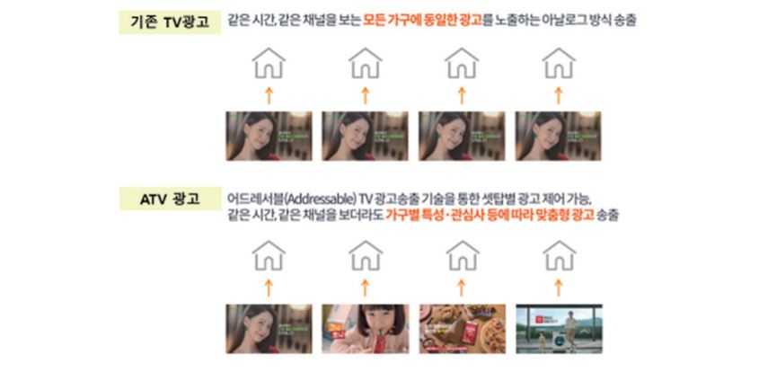
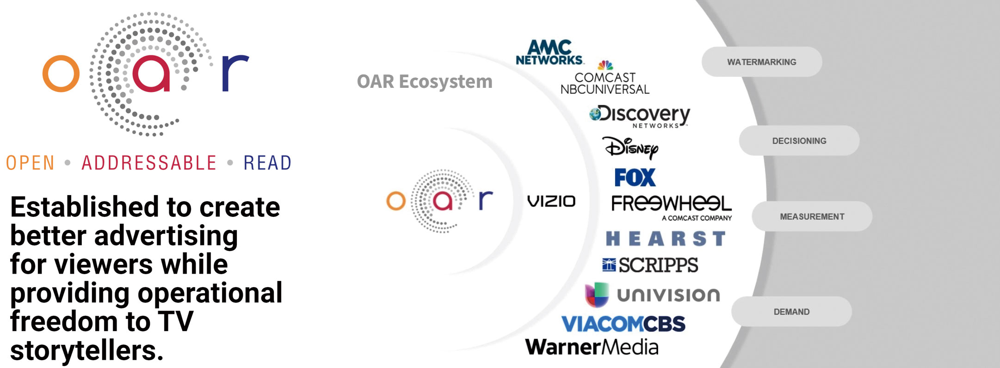
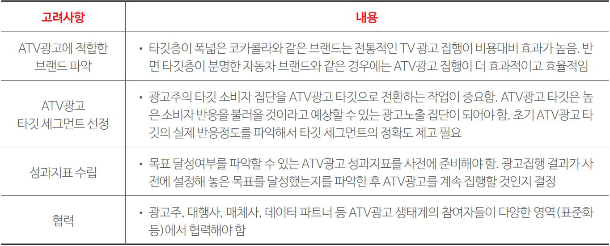
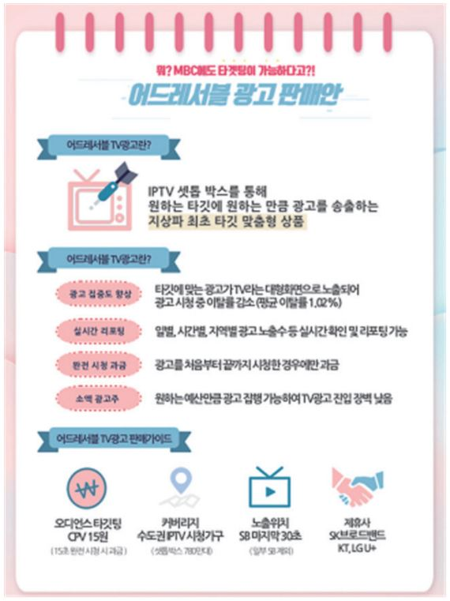
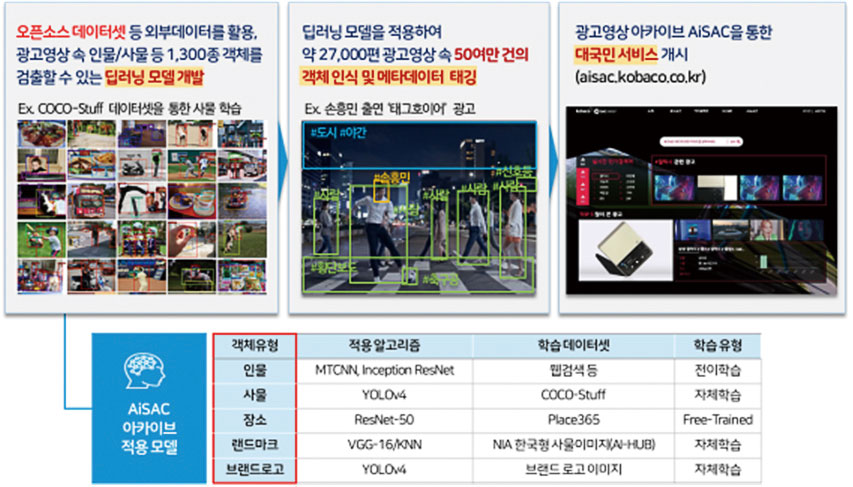
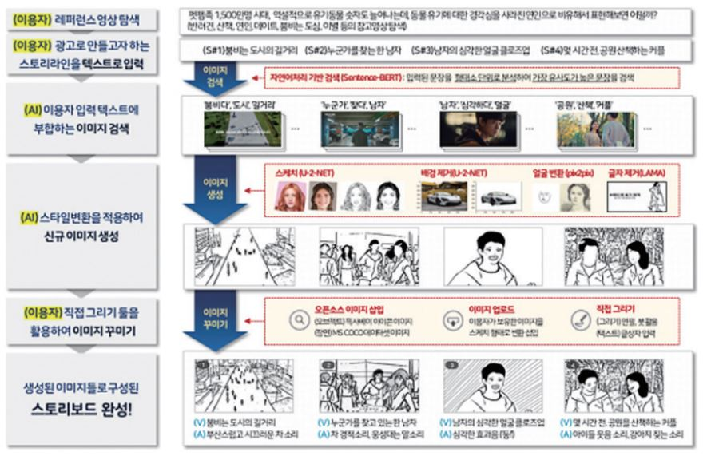

애드테크

Add Teck
디지털 전환시대,
방송광고의 진화
박종구
(KOBACO 미디어광고연구소 연구위원)
-
데이터가 주도하는 광고시장으로의 변화는 소비자의 주목과 광고주의 광고비를 놓고 경쟁해야 하는 전통적인 TV 산업에게 커다란 도전이 되고 있다. 그리고 이 과정에서 TV광고도 공진화하고 있다. 국내외 방송사업자들은 대규모 잠재고객에게 접근할 수 있는 TV광고의 장점과 타깃팅을 가능하게 해주는 디지털의 장점을 결합한 ‘어드레서블’ TV광고에 주목하고 있다. 한편, 인공지능은 소비자 구매의사결정 과정뿐만 아니라 스토리텔링과 같은 광고제작 분야에서도 활용방안이 모색되고 있다. 이 글은 디지털 전환시대, TV광고의 진화 양상을 ‘어드레서블 TV광고’와 ‘AI기반 광고창작 지원시스템 AiSAC’ 사례를 통해 살펴보고자 한다.
-
1들어가며소비자의 관심이 희소한 자원이 되어버린 ‘주목의 경제’ 시대에 소비자는 자신과 관련 없는 광고에는 눈길을 주지 않는다. 데이터 기반 맞춤형 콘텐츠 서비스의 확산으로 소비자가 자신의 취향에 맞지 않는 정보를 회피할 수 있게 되면서, 자신만의 이념적 거품에 갇히는 ‘필터버블(Filter Bubble)’이라는 역기능을 경험하기도 한다. 하지만 광고는 이러한 문제에서 자유롭다. 왜냐하면 자신과 관련 없는 광고는 ‘쓰레기(Spam)’지만, 나와 관련된 광고는 ‘정보’가 되기 때문이다. 이것이 바로 소비자가 필요로 하는 맞춤형 광고가 필요한 이유다.
맞춤형 광고의 탄생은 디지털 기반 미디어 서비스의 확산으로 인한 소비자의 기대와 이용행태의 변화와도 그 궤를 같이 한다. 현재의 소비자는 자신의 취향과 욕구를 충족시켜주는 맞춤화된 콘텐츠를 제공하는 미디어 플랫폼을 선호한다. 그리고 소비자의 주목을 쫓아야만 하는 광고주 또한 변화된 미디어 이용환경에 적응하기 위해 타깃 마케팅을 강화하고 있다.
TV광고는 광고 산업에서 여전히 중요한 역할을 차지하고 있지만, 미디어 이용행태 변화에서 자유롭지 못하다. 시청자가 필요로 하는 광고를 제공하는 것이 방송사업자들이 ‘어드레서블’(Addressable) TV광고에 주목하는 이유다. 한편, 광고산업에서 인공지능은 스토리텔링 작성과 같은 광고제작 분야에서도 사용되고 있다. 아이비엠 왓슨 인공지능(IBM Watson AI) 시스템이 개발한 스크립트로 제작된 2018년 렉서스(Lexus)의 <Driven by Intuition> 캠페인은 인공지능이 쓴 대본으로 제작된 광고업계 최초의 상업광고이다. 국내에서도 인공지능을 활용한 개방형 광고창작 지원시스템인 아이작(AiSAC, Ai analysis System for Ad Creation) 시스템이 광고산업의 공공인프라로 개발되어, 2021년부터 무료로 제공되고 있다. -
2어드레서블TV(ATV) 광고(박종구, 2021a)광고시장은 소비자의 주목과 광고주가 지불하는 광고비가 맞교환되는 거래시장이다. 소비자의 눈길을 사로잡는 미디어는 성장하는 반면, 그렇지 못한 미디어의 광고시장은 쇠락의 길을 걷게 된다. 국내 광고시장 핵심적인 변화는 모바일 광고시장의 폭발적인 성장과 지상파TV 광고비의 지속적인 하락으로 요약된다. 매체별 광고시장의 불균형적인 성장이 구조화되고 있는 상황에서 광고 산업은 ‘데이터가 이끄는’ 환경에 놓이게 되었다(박종구·권예지·강신규, 2021).
유튜브(YouTube)와 넷플릭스(Netflix) 같은 OTT 동영상 플랫폼의 전 세계적 확산은 소비자의 주목과 광고주의 광고비를 놓고 경쟁해야 하는 전통적인 TV산업에게 커다란 도전이 되고 있다. 방송사업자들은 데이터 기반으로 이동하는 광고시장에 대응하기 위해, 대규모 잠재고객에게 접근할 수 있는 TV광고의 장점과 타깃팅을 가능하게 해주는 디지털의 장점을 결합한, 맞춤형 광고인 ‘어드레서블 TV광고’(이하, ATV광고) 개발에 집중하고 있다(SmartClip, 2020).
2.1.ATV광고 개념
전통적인 TV광고는 특정 프로그램을 시청할 것으로 예상되는 성별·연령 기준의 시청자 집단을 대상으로 하는 타깃 ‘추정’ 광고다. 이처럼 전통적인 TV광고가 모든 시청자에게 동일한 광고를 전달했다면, ATV광고는 타깃 가구에만 맞춤화된 광고를 노출시킨다. 다시 말해, ATV광고란 셋탑박스 기반 방송서비스에서 제공되는 맞춤형 TV광고로, ‘동일한 프로그램을 시청하는 개별 시청가구에 서로 다른 광고를 노출시키는 맞춤화된 타깃 광고’로 정의된다.그림 1어드레서블 TV 광고 개념출처: 나스미디어(2020). <IPTV광고 통합 소개서>
ATV광고는 셋탑박스를 통해 수집된 전문편성, 홈쇼핑 채널과 같이 시청자의 취향과 관심품목 등을 파악할 수 있는 시청행태 데이터를 기반으로 시청자 집단을 세분해서 광고주에게 맞춤형 광고를 제안하고, 광고주는 자사의 목표 고객에 해당하는 시청자 세그먼트를 구매해 타깃 광고를 집행한다. 이른바 오디언스 바잉(Audience Buying)이다.
2.2.해외 ATV 광고 현황
먼저 미국의 사례를 살펴보면, ATV광고 시장의 성장률은 높지만, ATV광고를 집행할 수 있는 광고 인벤토리(광고시간)의 공급은 부족한 상황이다. 현재 ATV광고를 집행할 수 있는 광고시간은 유료방송사업자(케이블TV/위성방송)가 광고판매권을 가지고 있는 시간당 2분 동안의 ‘스테이션 브레이크 광고’에 국한되어 있다. 다시 말해 대부분의 광고 인벤토리를 보유한 채널사업자(TV네트워크)의 광고에는 ATV광고가 적용되고 있지 않다.
경제상황, 광고시장 트렌드, 광고 매체 간 경쟁 등 다양한 요인들이 ATV광고 성장률에 영향을 주겠지만, ATV광고를 집행할 수 있는 광고 인벤토리의 확대는 ATV광고의 핵심 성공요인이다. 시간 당 15분의 광고 인벤토리를 가지고 있는 TV 네트워크가 유료방송사업자와 협력해서 인기 프로그램의 광고시간에 ATV광고를 적용하는 경우, ATV광고의 성장 가능성은 커질 것이다.
현재 미국에서는 ATV광고 기술협의체인 ‘프로젝트 OAR’이 운영되고 있다. 2018년에 결성된 이 협의체는 개인정보보호를 준수하는 소비자 지향적인 ATV광고 생태계를 조성하고, ATV광고의 판매·타깃팅·광고효과 등 다양한 영역에서 광고 인벤토리를 최적화하고 정밀한 맞춤형 광고를 제공하기 위한 기술표준을 개발하고 있다. 현재 폭스 코퍼레이션(Fox Corporation), 비아컴CBS(ViacomCBS), 디즈니미디어네트워크(Disney Media Networks), 워너미디어(WarnerMedia) 등이 협의체에 참여하고 있으며, ATV광고를 전국 TV네트워크 프로그램에 적용하는 것을 목표로 기술시험을 진행하고 있다.
타깃팅이 가능한 ATV광고는 더 높은 광고단가 책정을 통해 더 많은 광고수입을 얻을 기회를 방송사업자에게 제공한다. 한편 광고주는 타깃 시청자 집단에게만 광고를 노출시킬 수 있기 때문에 비용 대비 수익(ROAS, Return on Ad Spend)을 높일 수 있다.그림 2미국 ATV광고 표준화 기술협의체 OAR출처: Project OAR(https://projectoar.org/)
영국 미디어그룹 스카이(sky)의 자회사로 ATV광고사업을 담당하고 있는 애드스마트(AdSmart)는 채널 전환율, 광고 선호도, 주목도, 상기 등 다양한 차원에서 나타나는 ATV광고 효과에 대한 실증적인 결과를 제시했다(AdSmart, 2019).1
유럽(벨기에, 이탈리아, 프랑스, 영국)에서는 ATV광고가 중소기업에게 TV광고 집행에 대한 문턱을 낮춰주어 중소기업의 마케팅 활동을 지원함과 동시에 TV광고주의 저변 확대에도 기여할 것으로 전망되고 있다. ATV광고시장이 활성화되기 위해서는 다양한 성공사례가 제시되어야 하고, ATV광고에 대한 신뢰성과 투명성을 제고하기 위한 참여자들의 다양한 협력이 필요하다.- 애드스마트 사가 제시한 어드레서블 TV광고 효과에 대한 주요 결과는 다음과 같다: 기존 TV광고 대비 채널 변경 48% 감소, 광고 적합성을 높여 광고 호감도 10% 증가, 감성 반응 22% 증가, 광고 주목도 35% 증가, 비보조 광고상기(spontaneous ad recall) 10% 증가, 비보조 브랜드 인지(spontaneous brand awareness) 4% 증가, 최초 TV광고 집행 브랜드 판매지표 20% 상승, 브래드 구전 14% 증가, 기존 TV광고 연계 집행시 광고인지 22% 증가, 광고상기 49% 증가
표 1성공적인 ATV광고 집행을 위한 고려사항출처: CIMM(2019.8). Addressable TV and Implications for the Future of TV Measurement.
2.3.국내 ATV 광고 현황
국내에서도 타깃팅이 가능한 실시간 ATV광고가 집행되고 있다. 구체적으로 SK브로드밴드(BTV)가 2016년 2월 ‘스마트 빅 애드(Smart Big Ad)’라는 광고상품을 출시했고, 2017년에는 KT(Olleh TV)의 ‘라이브 애드(Live Ad)’와 LG유플러스(U+TV)의 ‘아트 애드(Art Ad)’가 소개되면서 초기시장이 형성되었다. 해외사례에서 살펴본 것처럼 ATV광고가 확산되기 위해서는 ATV광고 인벤토리 확대, 광고효과 측정 및 검증, 소비자의 프라이버시에 대한 우려 해소 등 해결해야 과제가 적지 않다. 이러한 과제는 한국에서 ATV광고가 성장하기 위해 해결해야 하는 이슈이기도 하다.그림 3MBC 어드레서블 TV광고 도입출처: KOBACO(2022). <MBC 어드레서블 TV광고 판매안>
가장 중요한 과제는 제한된 광고 인벤토리를 확대하는 것이다. 그동안 실시간 ATV광고 인벤토리는 유료방송 채널사용사업자(PP)가 플랫폼인 IPTV사에 제공하는 시간당 2분 동안의 큐톤광고2 시간에 불과했다. 그러나 2021년 광고 인벤토리를 확대하기 위해 영향력 있는 지상파방송사의 프로그램 광고에도 ATV광고를 적용하는 방안이 논의되었고, 2021년 하반기에 MBC가 ATV광고 도입을 결정했다. 이로써 한국의 ATV광고 시장은 IPTV 플랫폼의 광고재원을 판매했던 ATV광고 1.0시대에서 지상파방송사의 광고 인벤토리에 ATV광고가 적용되는 ATV광고 2.0시대로 진입했다.- 큐톤광고는 방송채널사용사업자(PP, Program Provider)가 플랫폼인 유료방송사업자(케이블SO, IPTV)에게 제공하는 시간당 2분 정도 광고시간을 말한다. 플랫폼사 광고삽입 시각을 알려주는 신호로 큐톤(Cue-Tone)을 사용하기 때문에 붙여진 이름이다.
-
3 AI기반 개방형 광고창작 지원시스템: kobaco AiSAC(박종구, 2021b)
3.1.인공지능과 광고
4차 산업혁명 핵심기술이라 불리는 인공지능이 사회발전의 디딤돌이 될지, 아니면 기술 거품의 또 다른 사례에 멈출 것인지 의견이 분분하다. 그리고 인공지능이 기술적·사회적·경제적 차원에서 구체적으로 어떤 기회와 위험을 가져올 것인지에 대한 생각 또한 다양하다(Standford University, 2021). 이러한 상황에서 공정성과 투명성이 강조되는 ‘책임성 있는 인공지능(Responsible AI)’ 개발과 운영은 인공지능의 사회적 수용을 위해 풀어야 할 숙제이다(Gartner, 2021.9.22.).
소비자 구매결정과정(Customer Journey)은 필요와 욕구에 대한 자각을 시작으로 초기 고려, 적극적인 평가, 구매 및 구매 후 행동의 과정을 거친다. 변화된 소비자 환경에서 광고 목표를 효과적으로 달성하기 위해 소비자 구매결정과정의 모든 단계에서 현재 인공지능이 활용되고 있다. 예를 들어, 소비자에 대한 인사이트 발굴, 광고 제작, 미디어 플래닝, 광고영향 평가 등에서 인공지능을 보다 효과적으로 활용하는 방안을 모색하고 있다. 인공지능과 광고에 대한 학계의 논의 또한 지속되고 있으며, 그 과정에서 “(소비자를) 설득하려는 의도로 인간과 기계로부터 제공되는 데이터를 학습하는 다양한 인공지능의 기능을 사용하는 브랜드 커뮤니케이션”으로 정의되는 ‘인공지능 광고(AI advertising)’라는 개념이 제시되기도 하였다(Rodgers, 2021). 광고산업에서 인공지능은 소비자 구매의사결정 과정뿐만 아니라 스토리텔링 작성과 같은 광고제작 분야에서도 활용방안이 모색되고 있다.
3.2.해외 인공지능 활용 광고제작 사례
2018년 렉서스(Lexus)의 <Driven by Intuition> 광고영상은 인공지능이 쓴 대본으로 제작된 광고업계 최초의 상업광고이다. 이 광고물은 아이비엠의 인공지능 시스템인 왓슨이 추출한 스크립트를 바탕으로 스토리를 구축한 대표적인 사례이다. 이 광고물을 제작하기 위해 인공지능 왓슨은 자동차와 럭셔리브랜드 캠페인 분야에서 ‘칸 라이언즈 상’을 받았던 광고물들의 영상·텍스트·오디오 등을 분석해서 수상작들에서 공통적으로 나타나는 요소를 파악하고, 데이터 학습을 통해 스크립트를 추출했다. 인공지능을 활용해 칸 라이언즈 수상작들이 가지고 있는 소구점을 파악해서 광고제작에 반영한 이 광고물은 인공지능 시대 광고산업에서 사람과 인공지능이 협력하는 방법을 보여주는 대표적인 사례로 평가받고 있다(Spangler, 2018.11.19.).
그림 4인공지능 스토리텔링으로 제작된 최초의 상업광고: 렉서스-IBM ‘Driven by Intuition’출처: VARIETY(2018.11.19.). https://youtu.be/6qEbgOKXpLg
3.3.국내 인공지능 활용 광고제작 지원 공공인프라: kobaco 아이작
공영 미디어렙인 한국방송광고진흥공사(KOBACO)는 2004년부터 광고회사가 제작한 TV광고영상(TV CF)를 방송사에게 온라인으로 실시간 전송해 주는 방송광고 소재 전송 시스템인 KODEX(KObaco Data EXpress)를 운영하고 있다. KOBACO는 KODEX 시스템을 통해 지상파·종편·케이블·IPTV 등 180여 개 매체사에 광고영상을 전송하고 있으며, 현재 20만 편이 넘는 광고영상을 축적하고 있다. 이러한 광고영상 데이터를 기반으로 KOBACO는 중소 광고제작사와 광고주, 그리고 대학 교육과정 등에서의 광고 제작을 지원하기 위해 인공지능 활용 광고제작 지원 공공인프라인 아이작(AiSAC: Ai analysis System for Ad Creation)’ 시스템(https://aisac.kobaco.co.kr)을 개발해서 제공하고 있다.
AI기반 광고영상 아카이브 서비스
2021년 3월에 시작한 AI기반 광고영상 아카이브 서비스는 딥러닝 기술을 활용하여 약 27,000편의 광고영상 속 50여만 건의 객체 인식과 메타데이터 태깅을 처리하여 광고에 자주 등장하는 인물, 사물, 장소, 랜드마크 등 총 1,300종의 객체를 검출할 수 있도록 설계되었다. 광고영상 아카이브는 인공지능이 식별한 객체 정보뿐만 아니라, 인공지능 객체 인식으로 파악할 수 없는 광고주·대행사·업종·품목과 같은 ‘광고 정보’와 내용적 특징 등을 포함한 콘텐츠 데이터를 추가로 생성해서, 이용자가 ‘럭셔리한’, ‘CM송’ 등과 같은 키워드로 원하는 광고 소재를 보다 쉽게 조회할 수 있도록 해준다.그림 5kobaco 아이작 ‘AI기반 광고영상 아카이브’ 서비스출처: KOBACO(2022.3). AI기반 개방형 광고창작지원 시스템 AiSAC(https://aisac.kobaco.co.kr)
광고 스토리보드 자동 제작 서비스
한편, 광고 스토리보드 자동 제작 서비스는 인간과 AI의 협업에 의한 스토리보드 창작방식으로 이용자가 스토리라인 텍스트를 입력하면, AI가 이에 해당하는 이미지를 생성하여 스토리보드를 지원해주는 서비스이다. 텍스트 인식을 위해 자연어 처리 알고리즘이 적용됐고, 스토리보드에 넣을 그림을 그리기 위해 이미지 생성에 사용되는 알고리즘(Generative Adversarial Network: GAN)이 적용됐다. KOBACO는 광고 제작 기반이 부족한 중소 광고제작사·광고주에게 손쉬운 광고 기획 및 제작 공공인프라를 제공하여 마케팅 역량 강화를 지원하는 것을 서비스 제공 목적으로 삼고 있다.그림 6kobaco 아이작 ‘광고 스토리보드 자동 제작’ 서비스출처: KOBACO(2022.3). AI기반 개방형 광고창작지원 시스템 AiSAC(https://aisac.kobaco.co.kr)
4마치며‘데이터 기반 타깃팅’, ‘인공지능’이라는 키워드로 대변되는 미디어·광고산업의 디지털 전환이 가속화되고 있다. ‘매스 타깃팅’이라는 TV광고의 차별적인 기능은 여전히 유효하지만, ‘맞춤형 광고’로의 전환 추세는 속도의 문제일 뿐, 방향의 문제는 아닌 듯하다. 광고시장의 어떤 이해관계자도 - 특히 광고소비자가 - 피해 보지 않는 방식으로 맞춤형 광고를 제공하는 방법과 제도가 필요할 뿐, 광고가 쓰레기(Spam)가 아닌 자신의 문제를 해결해주는 정보가 될 수 있도록 해주는 ‘맞춤형 광고’는 광고 진화의 지향점이다.
그리고 이러한 변화 속에서 TV광고도 공진화하고 있다. 거스를 수 없는 광고시장의 변화에 적응하기 위해 국내외 방송사업자들은 대규모 잠재고객에게 접근할 수 있는 TV광고의 장점과 타깃팅을 가능하게 해주는 디지털의 장점을 결합한, 맞춤형 TV광고인 ‘어드레서블’ TV광고에 주목하고 성공을 위한 실험을 계속하고 있다. 어드레서블 TV광고의 성패는 적합한 광고가 적절한 규모의 구매 가능성이 높은 고객에게 전달되었는가에 객관적으로 보여주는데 달려있다. 이를 위해서는 광고효과를 객관적으로 측정할 수 있는 신뢰할 수 있는 시스템(제도) 마련이 필요하다.
또한 인공지능 시대에 TV광고는 인공지능 기술을 적용하기 위한 필수 자원인 투입데이터의 역할을 하기도 한다. 인공지능 활용 광고제작 지원 공공인프라인 아이작 사례가 이러한 사실을 보여주고 있다. 공공인프라의 가치는 개방 그 자체에 있는 것이 아니라, 그것이 사용되었을 때 비로소 실현된다. 아이작의 궁극적인 가치가 실현될 수 있도록, 지속적인 홍보와 교육이 이루어져야 한다.Reference
- 미디어오늘(2021.12.2.). MBC에서 우리 집 ‘맞춤형 광고’ 나온다. www.mediatoday.co.kr/news/articleView.html?idxno=300957
- 미디어오늘(2022.9.14.). 개인정보 불법수집 페북·구글에 역대 최고 과징금 1000억 부과 https://www.mediatoday.co.kr/news/articleView.html?idxno=305820
- 박종구·권예지·강신규(2021). <미디어산업 분야 데이터 기술활용방안>. 한국방송통신전파진흥원.
- 박종구(2021a). TV광고의 진화: ‘어드레서블’ TV광고. 한국광고학회(편), <광고의 미래: 넥스트 10년>(220-237쪽).
- 박종구(2021b). 인공지능과 광고: AI 광고 사례. 강정석 외, <인간 정서와 AI>(163-191쪽). 한울아카데이.
- AdSmart(2019). Five Years & Forward. Retrieved from www.skymedia.co.uk/wp-content/uploads/2019/08/The-AdSmart-White-Paper-2019.pdf
- Nielsen(2020.7). Addressable TV advertising ready for prime time
- Smartclip(2020). Addressable TV Targeting. Retrieved from https://smartclip.tv/resources/publications/addressable-tv-advertising-supply-white-paper-2020/
- Standford University(2021.9). Gathering strength, gathering storms: The one hundred year study on Artificial Intelligence(AI100) 2021 study panel report.
- Gartner(2021.9.22.). The 4 trends that prevail on the Gartner Hype Cycle for AI, 2021.
- Rodgers, S.(2021). Themed issue introduction: Promises and perils of artificial intelligence and advertising. Journal of Advertising, 50(1), 1-10.
- Spangler, T.(2018.11.19.). First AI-Scripted Commercial Debuts, Directed by Kevin Macdonald for Lexus(Watch).